Nepal Flash Flood Emergency Appeal
You can bring urgently needed help to families suffering from Nepal’s flash flood.
Tax-deductibleGive to the Nepal appeal
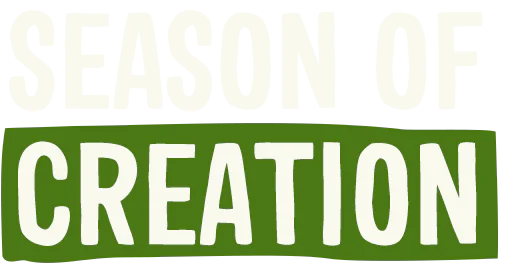
Our world is in crisis. Help us protect, care for and renew life on our planet through the Season of Creation Appeal.
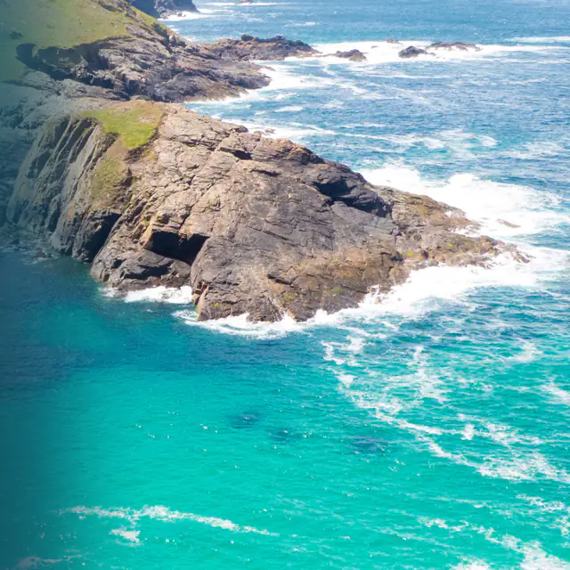
You can bring urgently needed help to families suffering from Nepal’s flash flood.
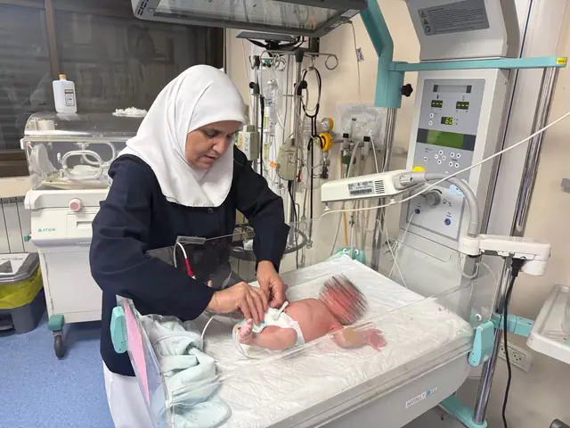
You can help bring medical relief to families in Gaza and the West Bank who are living through ongoing violence and displacement.
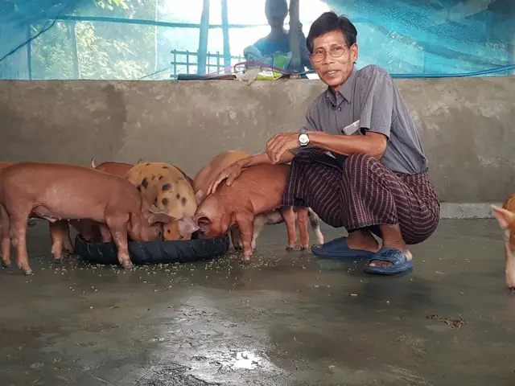
You can be the Light of Christ as you support vulnerable displaced people during the protracted crisis in Myanmar.
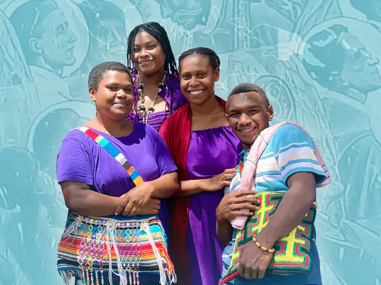

The New Guinea Martyrs chose to remain with the people they loved. Honour their legacy by supporting education and leadership programs for our neighbours in Papua New Guinea.
Anglican Board of Mission is the national mission agency for the Anglican Church. It is the channel through which Australian Anglicans participate in mission, both here and overseas.
Anglicans in Development is wholly owned by ABM, and operates ABM’s Sustainable Communities program, working with church partners to deliver grassroots, community-driven development, and disaster preparedness and response.
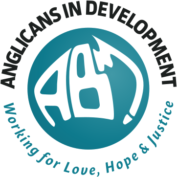
Anglican Board of Mission Gifts are not tax-deductible
Anglicans in Development Gifts of $2 or more are tax-deductible
Anglican Board of Mission
Our Church to Church work sits at the heart of ABM as it embraces particularly the first two Marks of Mission: witness to Christ’s saving, forgiving and reconciling love for all people, and build welcoming, transforming communities of faith.
While the Theological Education Program is at the forefront of this work, it is complemented by the Encounter Program.
Church to Church on abmission.orgAnglican Board of MissionAnglicans in Development
We believe that the task of working for reconciliation within Australia is integral to mission.
Through its Reconciliation Fund, ABM provides a mechanism for the National Aboriginal and Torres Strait Islander Anglican Council (NATSIAC) to prioritise and fund local ministry initiatives by, for and with Aboriginal and Torres Strait Islander peoples.
Through its Aboriginal and Torres Strait Islander Leadership Fund, ABM AID supports institutions and initiatives which advance Indigenous education and self-determination, such as Nungalinya College in Darwin and Gawura School in Sydney.
Reconciliation on abmission.orgAnglicans in Development
Jesus came that we might have abundant life, and ABM AID believes that that life extends to the whole person living in community.
ABM AID’s Sustainable Communities work is done in collaboration with Anglican Church Partners across the Pacific, Africa, the Middle East, South East Asia and Sri Lanka, to help deliver grassroots community-driven development.
Anglicans in Development
Support ABM AID’s partners to quickly and effectively bring relief and hope when emergencies occur.
ABM Anglicans in Development is a member of Church Agencies Network Disaster Operations (CAN DO), an Australian disaster response consortium.
Current emergency appeals1. Witness to Christ’s saving, forgiving and reconciling love for all people
2. Build welcoming, transforming communities of faith
3. Stand in solidarity with the poor and needy
4. Challenge violence, injustice and oppression, and work for peace and reconciliation
5. Protect, care for and renew life on our planet
We want to see people everywhere experience the wholeness of life God offers in Jesus Christ, and to this end we support our partners as they participate in God’s mission.
Reconciliation Fund, Aboriginal and Torres Strait Islander Leadership and the Bishop Arthur Malcolm Endowment Fund
Anglican Church of Papua New Guinea and Bishop Newton School of Theology
Episcopal Church in the Philippines and Philippine Independent Church
St John’s Anglican Seminary Zambia and Zambia Anglican Council
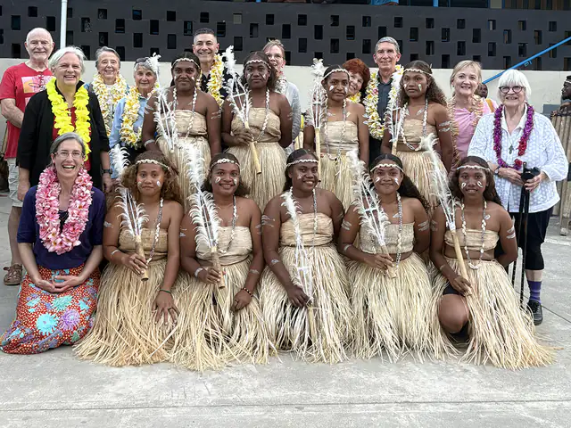
What is a pilgrimage? 13 Australian Anglicans found out first-hand during ABM’s pilgrimage to the Solomon Islands in July 2026, and came to a deeper understanding of how God is at work through the Anglican Church of Melanesia.
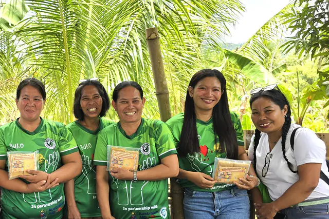
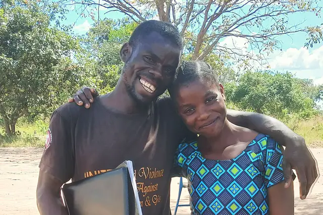
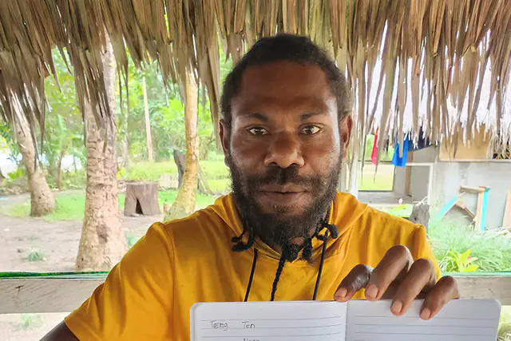
God of all, bless the Anglican Board of Mission as it serves the Church in Australia and our partner churches overseas. Inspire its work and its vision that all may come to know your justice, your peace and your love; through Jesus Christ our Lord. Amen.
ABM’s Pilgrimage program is an opportunity for ABM supporters to “come and see” what God is doing through their support of our partners. It is a chance to experience what it means to be church in a different culture and context.
PilgrimagesBy including ABM and AID in your Will, you can leave a lasting legacy that extends far beyond your immediate circle, enriches communities and strengthens churches for generations to come.
For a confidential conversation, call Lyn Moorfoot, Head of Fundraising, on 1300 302 663.
Gifts in WillsThe latest news from us, our Partners and around the Anglican Communion, with our appeals and quarterly pew reflections.
HomeDonate
Thank you for choosing to support the work of ABM and AID through your generous donation. Your gift is very much appreciated by us and the partners we work with.
When possible, please include the campaign, program or partner name.
Please give your name, Donor ID (if known), address, phone and email.
All donations are in Australian dollars (AUD). Donations ($2 and over) made to AID are tax-deductible. Donations made to ABM are not tax-deductible.
ABM and AID ask you to donate responsibly.
Working to heal a weary world
Many of us find great joy through our encounters with the natural world. The beauty of Creation reminds us of the beauty of the Creator, and of the great gift we hold in trust.
Each year we celebrate this gift and our responsibility for its care during the Season of Creation.
This year, we see God’s world crying out in pain. Glaciers collapsing. Warming oceans. Species extinction. The call to heed the Fifth Mark of Mission, “Protect, care for and renew life on our planet”, has never sounded louder.
But despite the dire circumstances facing our planet, the work of our Anglican partners around the world offers hope. From the Solomon Islands to Kenya, from Vanuatu to the Philippines, you support programs that protect God’s creation and equip people to face the climate crisis head on.
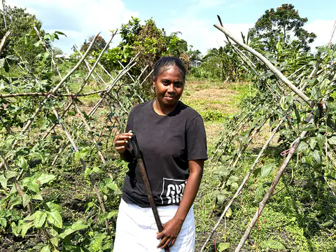
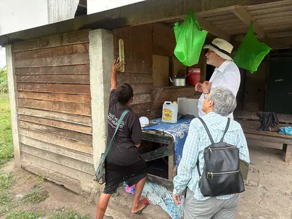
In the Solomon Islands, the Anglican Church of Melanesia teaches young people like Constance skills in sustainable farming. It also runs environmental observatories, recording rainfall, temperature and sea level rise, gathering the data needed to understand how the climate is changing.
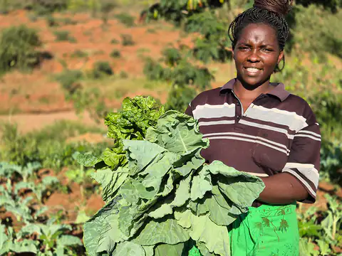
In Kenya, our partner Anglican Development Services Eastern trains communities in climate-smart agriculture, methods that improve yields and lessen harmful environmental impact.
In Vanuatu, the church is mobilising people to respond in times of natural disaster. Youth volunteers lead training and simulations in Disaster Risk Reduction, and ready emergency supplies, so that people are prepared when an earthquake or cyclone strikes.
Love for all God’s creatures, human, plant and animal, is reflected in the work of our partners.
A true ecological approach always becomes a social approach: it must integrate questions of justice in debates on the environment, so as to hear both the cry of the earth and the cry of the poor… Everything is connected.
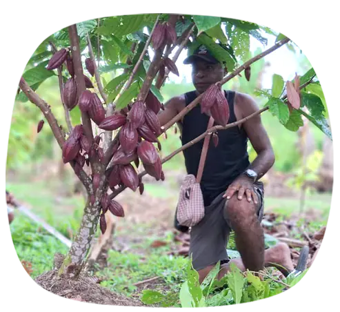
You help run training in sustainable agriculture, giving people a way to make a living in harmony with the earth.
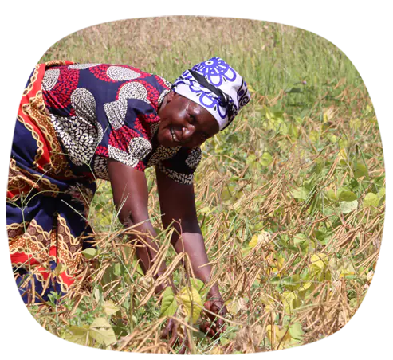
You build up the knowledge and skills of local people so they know how to care for the environment.
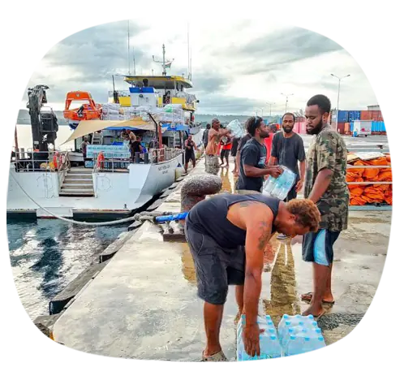
You help communities prepare for natural disasters, so they are ready to respond.
God our Creator, we thank you for the magnificence of your creation, and acknowledge that you have entrusted its care to us.
As we celebrate the Season of Creation, help us to remember the preciousness of the world, and how everything in it exists in a delicate balance.
By your Holy Spirit, help us to support that natural balance, being good stewards of the home we hold in trust.
Energise us to protect vulnerable communities and species throughout the world, so that the environment and all we who live in it may flourish one alongside another.
We ask this in Jesus’ name.
Amen
Let us remember that a world in pain is not a world without hope. Every act of care, every community choosing to live more harmoniously with the earth can become the seed of something new.
Thank you for joining us this Season of Creation as we heed the call to care for God’s earth together.
Once you’ve made the deposit, please email info@abmission.org.au with the amount, “Season of Creation 2026”, who the receipt should be made out to, and your address and phone number.
This is a tax-deductible project. All donations are in Australian dollars (AUD) and all gifts of $2 or more are tax-deductible. Gifts are received by the trustee for Anglicans in Development Ltd, ABN 86 647 293 481. Gifts will be applied to the support of projects selected. In the unlikely event of projects being oversubscribed or not proceeding to completion, donations will be applied to similar projects. Please donate responsibly.
ABM Anglicans in Development programs in Kenya, Vanuatu, Zambia and The Philippines acknowledge funding from the Australian Government through the Australian NGO Cooperation Program (ANCP).
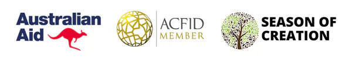